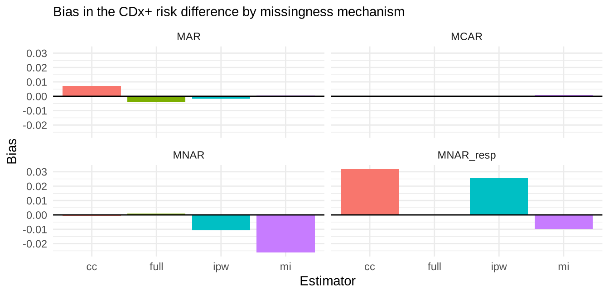

Day 8. Companion diagnostics and bridging statistics
Tags: [S] primary public source, [Y] my synthesis, [A] simulation assumption. All trial data are simulated.
(a) Concept
Term
Meaning
Companion diagnostic (CDx)
Test essential for the safe and effective use of a specific medicine (selects patients, or flags risk)
Clinical trial assay (CTA)
The assay used to select/stratify patients in the pivotal drug trial; often not the final commercial IVD
Bridging study
Shows the final CDx classifies like the CTA, and translates the trial result to the CDx+ population
Concordance
PPA, NPA, OPA between CTA and CDx. Not sensitivity/specificity: neither assay is a reference
Enrichment design
Only biomarker-positive patients randomised: cannot assess benefit in biomarker-negatives
All-comers / stratified design
Everyone randomised, analysed by biomarker status; allows the treatment × biomarker interaction
Core problem: the drug effect was estimated in CTA-defined patients, but patients will be selected by the CDx. If the two disagree, the effect in the CDx+ population is not what the trial reported, and the bridging set is usually incomplete (samples not retained). [Y]
(b) Regulatory anchor
Document
Verified statement
Tag
FDA, In Vitro Companion Diagnostic Devices (Aug 2014, final)
“An IVD companion diagnostic device is an in vitro diagnostic device that provides information that is essential for the safe and effective use of a corresponding therapeutic product.” Footnote 10: most will be Class III, though a Class II/510(k) classification may be appropriate in some cases
[S] fda.gov/media/81309
FDA, Principles for Codevelopment of an IVD CDx with a Therapeutic Product (July 2016)
Still a draft (“not for implementation”) on FDA’s page, content-current 2018
[S] fda.gov/media/99030
FDA, Developing and Labeling IVD CDx for a Specific Group of Oncology Therapeutic Products (Apr 2020, final)
The final title is “…Specific Group of…”; “Group or Class” was the draft title. Guidance body not read (landing page only)
[S]
IVDR Art 2(7)
CDx = device “essential for the safe and effective use of a corresponding medicinal product” to identify patients most likely to benefit, or at increased risk of serious adverse reactions
[S]
IVDR Annex VIII Rule 3(f)
CDx → class C
[S]
IVDR Art 48(7), 48(8)
For CDx the notified body consults “a competent authority … under Directive 2001/83/EC or the EMA, as applicable” (Annex IX 5.2 / Annex X 3(k)); also 48(3)/(4) for class D
[S]
IVDR Art 58(2)
CDx performance studies follow the additional-requirements articles; left-over-sample CDx studies are notified to the competent authority
[S]
Annex XIII Part A
The performance evaluation report must cover scientific validity, analytical and clinical performance
[S]
Specific bridging-study sample sizes, acceptance criteria
not set by these documents as far as read; not verified beyond the quoted text
–
(c) R lab
Setting [A]
Randomised all-comers trial, n = 1200, biomarker prevalence 40%. Response rates: control 20%; treatment 50% in biomarker-positive, 20% in negative (no benefit). CTA sensitivity/specificity vs the true biomarker state 0.93/0.90, CDx 0.97/0.95, errors independent given the true state (a simplification; real errors correlate). The simulation knows the truth; reality does not.
truth_cdx <-true_effect_cdx_pos()truth_cta <-true_effect_cdx_pos(cdx =c(se =0.93, sp =0.90))kable(data.frame(Population =c("True biomarker-positive", "CTA-positive (what the trial analysed)", "CDx-positive (who will be treated)"),`Risk difference (treatment - control)`=round(c(0.30, truth_cta, truth_cdx), 3), check.names =FALSE),caption ="Dilution by false positives: the effect depends on how the population is selected")
Dilution by false positives: the effect depends on how the population is selected
Population
Risk difference (treatment - control)
True biomarker-positive
0.300
CTA-positive (what the trial analysed)
0.258
CDx-positive (who will be treated)
0.278
Concordance on the bridging samples (PPA/NPA/OPA)
set.seed(81)d <-sim_trial(1200, miss ="MCAR", p_obs =0.60)b <- d[d$obs ==1, ]a <-report_agreement(b$cdx ==1, b$cta ==1)kable(data.frame(Measure = a$measure, `x/n`=paste0(a$x, "/", a$n), Estimate =round(100* a$est, 1),`Wilson 95% CI`=sprintf("%.1f - %.1f", 100* a$lower, 100* a$upper), check.names =FALSE),caption =sprintf("CDx vs CTA in %d bridging samples (%.0f%% of the trial)", nrow(b), 100*mean(d$obs)))
CDx vs CTA in 710 bridging samples (59% of the trial)
Measure
x/n
Estimate
Wilson 95% CI
PPA
257/311
82.6
78.0 - 86.4
NPA
366/399
91.7
88.6 - 94.1
OPA
623/710
87.7
85.1 - 90.0
The CTA is the comparator, not a reference: call these PPA/NPA/OPA (FDA 2007 logic, Day 5). The reported agreement is below 100% even though both assays are fairly accurate, because both have errors against the (unobservable) truth. [Y]
Estimating efficacy in the CDx+ population when bridging samples are missing
Estimators of the risk difference among CDx+ subjects: full (impossible in practice: CDx known for all), complete case (only subjects with a sample), IPW (weights 1/P(sample | CTA, arm)), multiple imputation of the CDx result (logistic on CTA, arm, response and arm×response; Rubin’s rules). Missingness mechanisms: MCAR (60% random), MAR (sample more likely when CTA+), MNAR (sample more likely when the CDx itself is positive), MNAR_resp (as MNAR, and among CDx+ subjects responders are more likely to have a retained sample).
set.seed(82)R <-300run <-function(miss) { out <-replicate(R, { d <-sim_trial(1200, miss = miss) e <-list(full =est_full(d), cc =est_cc(d), ipw =est_ipw(d), mi =est_mi(d, 10))unlist(lapply(e, function(v) c(v[["est"]], v[["se"]]))) })do.call(rbind, lapply(c("full", "cc", "ipw", "mi"), function(m) { est <- out[paste0(m, "1"), ]; se <- out[paste0(m, "2"), ]data.frame(Missingness = miss, Estimator = m, Bias =mean(est) - truth_cdx, RMSE =sqrt(mean((est - truth_cdx)^2)),Coverage =mean(abs(est - truth_cdx) <=1.96* se)) }))}res <-rbind(run("MCAR"), run("MAR"), run("MNAR"), run("MNAR_resp"))kable(res, digits =3, row.names =FALSE,caption =sprintf("%d simulated trials per scenario; truth = %.3f", R, truth_cdx))
300 simulated trials per scenario; truth = 0.278
Missingness
Estimator
Bias
RMSE
Coverage
MCAR
full
0.000
0.041
0.940
MCAR
cc
-0.001
0.055
0.947
MCAR
ipw
-0.001
0.055
0.953
MCAR
mi
0.001
0.047
0.933
MAR
full
-0.004
0.040
0.970
MAR
cc
0.007
0.048
0.950
MAR
ipw
-0.002
0.049
0.950
MAR
mi
0.001
0.042
0.963
MNAR
full
0.001
0.040
0.960
MNAR
cc
-0.001
0.043
0.960
MNAR
ipw
-0.011
0.046
0.937
MNAR
mi
-0.026
0.049
0.920
MNAR_resp
full
0.000
0.041
0.933
MNAR_resp
cc
0.032
0.063
0.917
MNAR_resp
ipw
0.026
0.061
0.920
MNAR_resp
mi
-0.010
0.046
0.930
ggplot(res, aes(Estimator, Bias, fill = Estimator)) +geom_col(show.legend =FALSE) +facet_wrap(~Missingness) +geom_hline(yintercept =0) +theme_minimal() +labs(subtitle ="Bias in the CDx+ risk difference by missingness mechanism")

Reading [Y]:
MCAR/MAR: all estimators are close to unbiased here; MI and IPW are the principled choices when availability depends on measured variables, and MI gains precision (smaller RMSE than complete case).
MNAR (availability depends on the CDx result only): complete case is still unbiased. The analysis population is “CDx+ subjects”, and selection that depends only on the stratifying variable does not distort a comparison within that stratum. IPW and MI, which model missingness through the CTA, are the ones that drift (MI worst).
MNAR_resp (availability also depends on the outcome): now complete case (+0.032) and IPW (+0.026) are distorted, because responders are over-represented among retained samples. MI, which conditions on the outcome, is least affected here (−0.010) but is not protected in general: availability still depends on the CDx result itself. Only a sensitivity analysis can bracket the remaining risk.
The imputation model needed the arm × response term: omitting it gave a visible bias in my check, because the drug works only in biomarker-positives.
The practical lesson is to find out why samples are missing before choosing the estimator, and to pre-specify the sensitivity analysis. [Y]
Tipping-point sensitivity analysis (MNAR)
Assume a fraction pi_miss of the subjects without a sample are CDx+ (the observed fraction among those with a sample is the reference value), and see where the conclusion changes.
set.seed(83)d <-sim_trial(1200, miss ="MNAR")ref <-mean(d$cdx[d$obs ==1])grid <-seq(0.05, 0.95, by =0.05)tp <-do.call(rbind, lapply(grid, function(p) { e <-est_tipping(d, p)data.frame(pi_miss = p, est = e[["est"]], lo = e[["est"]] -1.96* e[["se"]], hi = e[["est"]] +1.96* e[["se"]]) }))c(observed_CDx_pos_fraction_in_bridging_set = ref, true_fraction =mean(d$cdx), fraction_among_missing =mean(d$cdx[d$obs ==0]))
Across the whole grid the estimate stays well above zero (the minimum lower CI limit is shown above), so the conclusion is robust to this assumption in this dataset. A real report would state the range of assumptions examined and the point at which the conclusion would change (the tipping point), if there is one. [Y]
Same number randomised (n = 160): enrichment randomises CTA+ only (screening about 2.5 patients per randomised one); all-comers randomises everyone, so only about 43% of its patients are CTA+. Power for the effect in the CTA+ population, and power of the treatment × biomarker interaction test (only possible with all-comers).
set.seed(85)nn <-160cmp_prop <-function(d) suppressWarnings(prop.test(table(factor(d$arm, 0:1), factor(d$resp, 0:1))[, 2:1])$p.value) < .05pw_enrich <-function(reps =600) mean(replicate(reps, { d <-sim_trial(ceiling(nn /0.40) +60, miss ="none"); cmp_prop(d[d$cta ==1, ][seq_len(nn), ]) }))pw_all <-function(reps =600) mean(replicate(reps, { d <-sim_trial(nn, miss ="none"); cmp_prop(d[d$cta ==1, ]) }))inter <-function(reps =600) mean(replicate(reps, { d <-sim_trial(nn, miss ="none"); f <-glm(resp ~ arm * cta, binomial, d)summary(f)$coefficients["arm:cta", 4] < .05 }))kable(data.frame(Design =c("Enrichment: effect in CTA+ (160 randomised CTA+)","All-comers (160 randomised): effect in its CTA+ subgroup","All-comers (160 randomised): treatment x CTA interaction"),Power =c(pw_enrich(), pw_all(), inter())), digits =3)
Design
Power
Enrichment: effect in CTA+ (160 randomised CTA+)
0.930
All-comers (160 randomised): effect in its CTA+ subgroup
0.485
All-comers (160 randomised): treatment x CTA interaction
0.315
Enrichment gives the most power for the effect in the selected population but no information on biomarker-negatives (and none on CTA false negatives); the all-comers design costs power but supports the claim that benefit is restricted to biomarker-positives and is the base for a CDx labelling decision. [Y]
Estimand sketch for a CDx claim (ICH E9(R1) vocabulary by analogy) [Y]
Attribute
Choice here
Population
Patients who test CDx+ with the final IVD in the intended-use setting
Treatment
Drug vs control, treatment-policy
Variable
Response (or time to event)
Intercurrent events
Discontinuation, switching: treatment-policy or hypothetical, pre-specified
Summary measure
Risk difference or ratio / hazard ratio in CDx+
Bridging-specific
How subjects without CDx samples are handled (IPW / MI / bounds), analysis of CTA-CDx discordant subjects
(d) Ten interview questions
show_questions(8, "../interview_questions.csv")
Q1. What is a companion diagnostic and which regulatory consequences follow in EU and US?
A device essential for the safe and effective use of a corresponding medicinal product (IVDR Art 2(7); FDA 2014 guidance). EU: class C via Annex VIII Rule 3(f); the notified body consults a medicines competent authority or the EMA (Art 48(7)/(8), Annex IX 5.2). US: usually PMA/Class III, though the 2014 guidance footnote allows Class II/510(k) in some cases; labelled in both device and drug labelling.
Q2. <98><85> What is the bridging problem?
The pivotal trial used a clinical trial assay; the commercial CDx differs. Show concordance of the CDx with the CTA on trial samples and estimate the effect in the population the CDx will actually select, using the trial result and the discordance.
Q3. Why report PPA/NPA between CTA and CDx instead of sensitivity and specificity?
Neither assay is a reference standard; FDA 2007 guidance says sensitivity and specificity are inappropriate for comparisons to a non-reference. PPA/NPA depend on which assay is the comparator and on the prevalence/spectrum of the bridging samples.
Q4. Only 60% of trial patients have a sample for the CDx. What do you do?
First understand why (MCAR, MAR on measured variables, MNAR on the CDx itself). Compare available vs missing on baseline variables and outcomes; analyse with IPW or multiple imputation (include arm x outcome interaction), and run tipping-point/bounds analyses for MNAR. Pre-specify this in the SAP.
Q5. <98><85> In your simulation multiple imputation was biased until you added the arm x response interaction. Why?
The drug only works in biomarker-positive patients, so the relation between response and CDx status differs by arm. An imputation model omitting that interaction is misspecified and biases the treatment effect in the imputed CDx+ group (0.264 vs 0.283 with it, truth 0.278 in my run). Imputation models must be at least as rich as the analysis model.
Q6. <98><85> Why is the effect in the CDx+ population different from the trial’s headline effect?
Selection by an imperfect assay mixes true positives (benefit) and false positives (no benefit). The effect in the selected population is a weighted average with weight = PPV of the assay for the biomarker. In my simulation: 0.30 in true positives, 0.278 in CDx+ (PPV 0.93), lower with a worse assay.
Q7. Enrichment vs all-comers designs?
Enrichment: higher power in the selected population, but no data on biomarker-negatives or on CTA false negatives, so a restricted claim cannot be tested and false negatives are unknowable. All-comers/stratified: allows treatment-by-biomarker interaction and effect in negatives; needs more patients.
Q8. How would you frame the estimand for a CDx claim?
Population: CDx+ per the intended-use setting; treatment policy; summary measure risk or hazard ratio in CDx+; intercurrent events handled per ICH E9(R1) by analogy; add how missing bridging samples and discordant CTA/CDx subjects are handled.
Q9. What else matters in a bridging study beyond concordance?
Reagent lot and site effects on classification near the cut-off, precision at the cut-off (C5/C95), sample type/handling differences, prevalence and spectrum of the bridging samples relative to the intended-use population.
Q10. Which FDA guidances anchor CDx development and what is their status?
In Vitro Companion Diagnostic Devices (Aug 2014, final); Principles for Codevelopment of an IVD CDx with a Therapeutic Product (July 2016, still marked draft on FDA’s page); Developing and Labeling IVD CDx for a Specific Group of Oncology Therapeutic Products (Apr 2020, final; “Group or Class” was the draft title).
(e) Claims
FDA 2014 / 2016 / 2020 guidance facts, IVDR Art 2(7), Rule 3(f), Art 48(7)/(8), Art 58(2) are in the ledger (chapter 8). Simulation conclusions are my synthesis and depend on assumptions stated above.